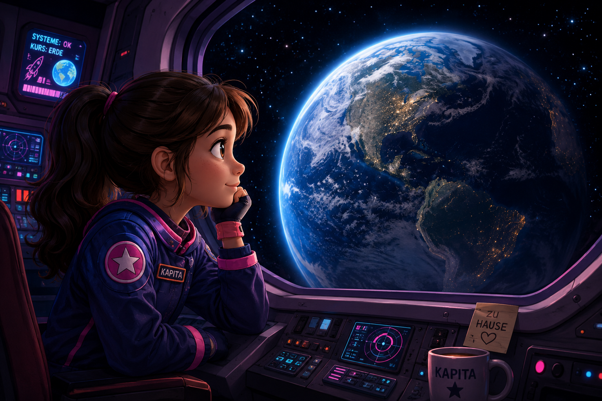
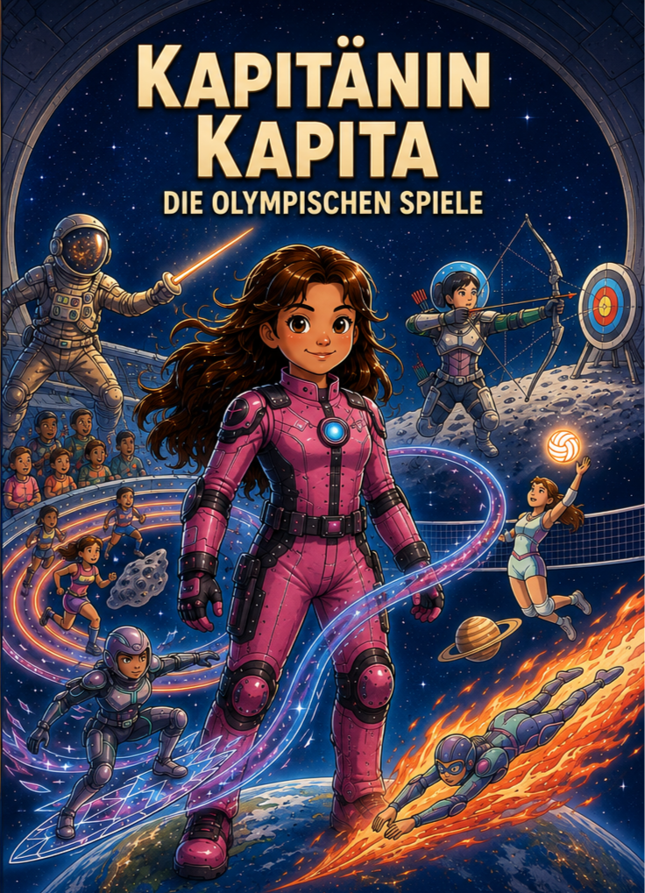
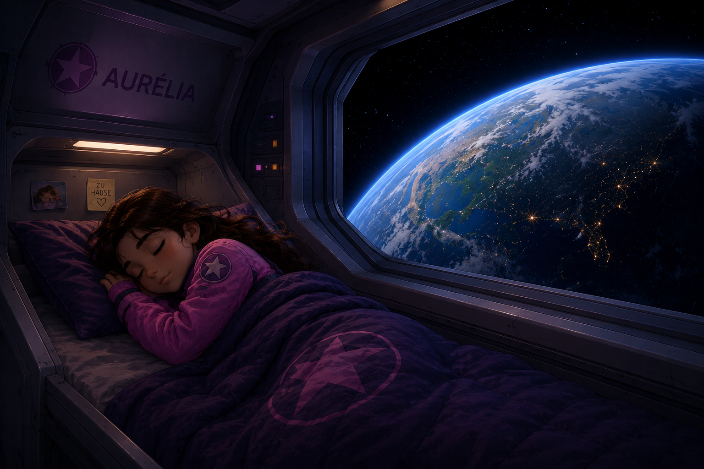

Kapitänin Kapita
Die Olympischen Spiele

Nach einer langen Reise durch das Sonnensystem war Kapitänin Kapita endlich auf dem Weg nach Hause.
Vor ihr lag unsere geliebte Erde: ein kleiner blauer Planet, der für Kapita noch immer der schönste und außergewöhnlichste Ort im ganzen Universum war.
Sie konnte es kaum erwarten, wieder in die Erdatmosphäre einzutreten.
Nach so langer Zeit im Weltraum vermisste sie Dinge, die ihr früher ganz selbstverständlich erschienen waren.
Sie vermisste ihre Familie, ihre Freunde und all das, was für sie bedeutete, zu Hause zu sein.
Doch noch musste sie sich ein wenig gedulden.
Bevor sie mit der Landung beginnen konnte, mussten alle Systeme des Raumschiffs überprüft werden.
Kapita kannte die Regeln genau: Es spielte keine Rolle, wie müde sie war oder wie sehr sie sich danach sehnte, endlich anzukommen.
Eine Weltraumreise war erst dann beendet, wenn das Raumschiff sicher gelandet war.
Und diese Reise war lang und anstrengend gewesen.
Doch Kapita kehrte nicht ganz als dieselbe zurück, die einst aufgebrochen war.
Während ihrer Reise durch das Sonnensystem hatte sie außergewöhnliche Orte kennengelernt.
Sie hatte Dinge gelernt, die sie sich früher niemals hätte vorstellen können.
Und sie hatte unglaubliche Freundschaften geschlossen, die sie niemals vergessen würde.
Nun war sie endlich wieder da.
Kapita stand vor dem Fenster ihrer Kabine und beobachtete, wie die Erde vor ihren Augen langsam größer wurde.
Blau.
Wunderschön.
Ihr Zuhause.
Sie lächelte und blieb einen Moment lang einfach dort stehen.
Ihr Blick blieb fest auf den Planeten gerichtet.
Doch langsam verschwand ihr Lächeln.
Irgendetwas war seltsam.
Kapita beobachtete die Erde weiter.
Alles wirkte ...
viel zu still.
Kapita wusste ganz genau:
Manchmal, wenn alles viel zu still erscheint ...
ist das kein gutes Zeichen.

Nach der langen Reise war Kapita erschöpft.
Bis zum Eintritt in die Erdatmosphäre blieb noch etwas Zeit.
Endlich konnte sie sich ein wenig ausruhen.
Zoe, übernimmst du?
Kapitas Stimme klang müde.
Zoe antwortete sofort.
Natürlich, Kapita. Ich kümmere mich um alles.
Kapita legte sich hin und schlief schon nach wenigen Minuten tief und fest.
Während Kapita schlief, wachte Zoe über das Raumschiff.
Sie kontrollierte die Temperatur, überprüfte die Energieversorgung und achtete darauf, dass alle wichtigen Systeme einwandfrei funktionierten.
Doch auch Zoe brauchte neue Energie.
Als alle Kontrollen abgeschlossen waren, begann sie, ihre eigenen Batterien aufzuladen.
Einige Zeit später öffnete Kapita die Augen.
Guten Morgen, Kapita.
Kapita setzte sich auf und blickte sofort zum Fenster.
Die Erde war jetzt ganz nah.
Sind wir bereit?
Zoe bestätigte es.
Ja. Wir können in die Erdatmosphäre eintreten.
Jetzt war es wirklich so weit.
Nach all der Zeit im Weltraum kehrte Kapitänin Kapita endlich nach Hause zurück.
Das Raumschiff trat in die Erdatmosphäre ein und begann seinen Landeanflug.
Wenig später stand Kapita wieder auf der Erde.
Zoe blieb im Raumschiff.
Bis später, Zoe!
Bis später, Kapita. Viel Spaß mit deiner Familie!
Nach so langer Zeit im Weltraum freute sie sich darauf, wieder durch die Straßen zu gehen und das Leben auf der Erde zu sehen.
Zuerst schien alles ganz normal zu sein.
Doch nach einer Weile fiel ihr etwas auf.
Fast alle Menschen hatten ein Smartphone in der Hand.
Manche liefen und schauten dabei auf den Bildschirm.
Andere saßen nebeneinander, ohne miteinander zu sprechen.
Auch in den Cafés, an den Bushaltestellen und auf den Straßen war es dasselbe.
Kapita sah sich verwundert um.
Was ist denn hier los?
Sie ging weiter und beobachtete die Menschen.
War ich wirklich so lange weg?
Kapita blieb stehen.
Überall waren Menschen.
Und doch schienen viele kaum zu bemerken, was um sie herum geschah.
Fast alle waren mit ihren Smartphones beschäftigt.
Seltsam ...
Irgendetwas hatte sich verändert.
Kapitel 2 – Der Alarm
Im Kontrollzentrum der Raumstation schlugen die Sensoren plötzlich Alarm.
Zoe empfing ein Warnsignal von der Erde. Irgendetwas war aus dem Gleichgewicht geraten.
Sie überprüfte die Daten noch einmal, doch das Signal blieb bestehen.
Kapita musste zurückkommen.
Zoe rief sie sofort.
„Zoe, was ist los?“, fragte Kapita.
„Ich empfange ein Gefahrensignal von der Erde. Irgendetwas stimmt nicht. Wir müssen herausfinden, was dort passiert.“
Kapita zögerte nicht. Sie verabschiedete sich von ihrer Familie und ihren Freunden und kehrte zum Raumschiff zurück.
Alles ging so schnell, dass es ihr beinahe vorkam, als wäre sie gar nicht zu Hause gewesen.
Auf dem Weg musste sie immer wieder an Zoes Worte denken.
Ein Gefahrensignal.
Was konnte so dringend sein?
Ein ungutes Gefühl machte sich in ihr breit.
Was, wenn wirklich etwas Schlimmes passiert war?
Als Kapita schließlich die Raumstation erreichte, ging sie direkt ins Kontrollzentrum.

„Zoe, was ist passiert?“, fragte Kapita besorgt.
„Genau das versuche ich herauszufinden.“
Auf den großen Bildschirmen erschienen zahlreiche Daten von der Erde. Einige Werte waren ungewöhnlich niedrig. Die Linien in den Diagrammen fielen weiter.
Kapita trat näher an die Bildschirme.
„Was bedeutet das?“
Zoe antwortete nicht sofort. Sie überprüfte die Daten noch einmal.
„Genau das ist das Seltsame.“
„Was meinst du damit?“
„Ich kann sehen, dass sich etwas verändert hat“, erklärte Zoe. „Aber ich kann noch nicht herausfinden, warum.“
Kapita betrachtete die fallenden Linien genau.
„Dann müssen wir die Daten genauer analysieren.“
Das Warnsignal blinkte weiter auf den Bildschirmen.
Irgendetwas geschah auf der Erde.
Aber sie wussten noch nicht, was dahintersteckte.
Noch nicht!
Im Kontrollzentrum stellte Zoe die Daten zusammen, die sie von der Erde empfangen hatte.
Kapita betrachtete die Diagramme aufmerksam.
Die Zeit vor den Bildschirmen hatte stark zugenommen. Doch nicht nur diese Zahl machte ihr Sorgen.
Auch andere Dinge schienen sich gleichzeitig zu verändern.
Die Fähigkeit, sich lange zu konzentrieren, Ablenkungen auszublenden, Informationen im Gedächtnis zu behalten und weiterzumachen, wenn eine Antwort nicht sofort zu finden war.
Kapita wusste, wie wichtig diese Fähigkeiten waren.
Ohne sie wären viele der großen Entdeckungen der Menschheit vielleicht niemals gemacht worden.
Den Weltraum zu erforschen, neue Technologien zu entwickeln oder Antworten auf schwierige Fragen zu finden, brauchte Zeit.
Man musste beobachten, lernen, Daten vergleichen, Möglichkeiten ausprobieren, Fehler machen und es erneut versuchen.
Doch die Diagramme zeigten eine Veränderung.
Immer häufiger war das Gehirn von schnellen Reizen, kurzen Informationen und sofortigen Belohnungen umgeben.
Kapita schwieg einen Moment.
Sie wusste noch nicht, wie weit das führen konnte.
Aber sie wollte es herausfinden.
Es gab ein großes Problem, das viele Menschen betraf, besonders Kinder und Jugendliche.
Sie verbrachten sehr viel Zeit mit dem Smartphone in der Hand.
Kapita hatte das bereits bemerkt, als sie auf der Erde gewesen war.
Man hatte eine geschickte Methode entwickelt, die Menschen dazu brachte, immer weiter auf den Bildschirm zu schauen.
Jedes Mal, wenn jemand mit dem Finger weiterwischte, erschien etwas Neues.
Manchmal war es lustig. Manchmal war es interessant. Manchmal auch nicht.
Aber es gab immer etwas Neues.
Und es schien niemals aufzuhören.
Das Gehirn begann nach mehr zu verlangen: „Nur noch ein bisschen … nur noch eins …“
Und ohne es zu bemerken, konnte man sehr viel Zeit damit verbringen, auf den Bildschirm zu schauen.
Das Problem war: Wenn das zu lange so weiterging, wurde das Gehirn müde.
Es wurde schwieriger, sich in der Schule zu konzentrieren.
Richtig zu spielen. Mit anderen Menschen zu reden. Oder sogar gut zu schlafen.
Und das betraf nicht nur Kinder. Auch viele Erwachsene verbrachten Stunden vor ihren Bildschirmen.
Kapita blickte wieder auf die Daten.
Die Art, wie diese Systeme funktionierten, brachte die Menschen dazu, viel länger vor dem Bildschirm zu bleiben, als sie glaubten.
Und das konnte sich sowohl auf den Kopf als auch auf den Körper auswirken.
Kapita wurde nachdenklich.
Jetzt konnte sie das Problem besser erkennen.
„Wir müssen etwas dagegen tun.“
Kapitel 3
Der Plan
Lange dachte Kapita darüber nach, was sie tun könnte.
Sie ging die Daten immer wieder durch.
Dann hatte sie plötzlich eine Idee.
„Zoe!“
Zoe drehte sich zu ihr um.
Kapita lächelte.
„Wir veranstalten die ersten Olympischen Spiele im Weltraum!“
Zoe sah sie überrascht an.
Doch schon im nächsten Moment wurde Kapita wieder ernst.
Denn sofort fiel ihr etwas auf.
Wenn die Olympischen Spiele nur ein großes Spektakel zum Zuschauen wären, könnte alles wieder genau dort enden, wo das Problem begonnen hatte:
auf dem Smartphone.
Ein ganzes Spiel wurde zu einem sechs Sekunden langen Video.
Und schon kam das nächste.
Von einem Lied blieb manchmal nur ein kurzer Ausschnitt.
Aus einem lustigen Moment wurde ein Meme.
Aus einem Tanz wurden wenige Sekunden, die immer wieder wiederholt wurden.
Alles wurde kürzer.
Und danach wartete schon das nächste Video.
Kapita schüttelte den Kopf.
„Nein. Diese Olympischen Spiele dürfen nicht nur angeschaut werden.“
Sie dachte einen Moment nach.
„Man muss sie erleben.“
Jetzt wusste sie, wie ihr Plan aussehen sollte.
Kapita wollte Kinder und Jugendliche aus verschiedenen Orten einladen.
Sie sollten selbst ins All fliegen und an den ersten Olympischen Spielen im Weltraum teilnehmen.
Dort würden sie neue Sportarten lernen.
Sie würden Dinge ausprobieren, die sie noch nie zuvor gemacht hatten.
Und es gab nur eine einzige Regel.
Kapita sah Zoe an.
„Während der Olympischen Spiele gibt es keine Smartphones.“
Nicht als Strafe.
Das Smartphone sollte einfach für eine Weile nicht Teil dieser Erfahrung sein.
Die Teilnehmer sollten selbst entdecken, was sonst noch um sie herum geschah.
Sie würden Sport treiben, in Teams spielen und neue Herausforderungen ausprobieren.
Sie würden Schach lernen.
Sie würden Aufgaben lösen, bei denen Logik, Konzentration und Genauigkeit wichtig waren.
Manche würden darin richtig gut sein.
Andere vielleicht überhaupt nicht.
Viele würden verlieren.
Nur wenige würden gewinnen.
Aber genau darum ging es Kapita nicht.
Denn zwischen den Wettkämpfen konnte etwas ganz anderes entstehen.
Freundschaften.
Die Kinder und Jugendlichen würden miteinander reden.
Sie würden über Ideen diskutieren, Witze erzählen und eigene Spiele erfinden.
Sie könnten einander helfen, wenn etwas nicht funktionierte.
Vielleicht würde jemand einem anderen eine Sportart erklären.
Oder einfach sagen: „Komm, mach mit!“
Und manchmal musste überhaupt nichts passieren.
Durch die großen Fenster der Raumstation konnten sie die Erde sehen.
Die Sterne.
Und die riesige Dunkelheit des Weltraums.
Sie konnten einfach dort sitzen und schauen.
Vielleicht würden sie später, zurück auf der Erde, auch dort wieder genauer hinschauen.
Zum Himmel.
Zum Meer.
Zu den Bäumen oder zu den Menschen neben ihnen.
Ohne dass alle sechs Sekunden etwas Neues passieren musste.
Vielleicht würde ein Kind eine neue Sportart für sich entdecken.
Ein anderes würde lieber ein Buch lesen.
Jemand könnte Schach lieben.
Andere würden sich später mit Freunden zum Volleyball treffen.
Und vielleicht würde jemand keine besondere Aktivität finden.
Vielleicht würde dieses Kind dafür etwas anderes finden:
Freunde.
Kapita wollte niemandem vorschreiben, wie er leben sollte.
Sie wollte ihnen nur die Möglichkeit geben, das Leben ohne den ständigen Strom schneller Reize zu erleben.
Danach konnten sie selbst herausfinden, was sie wirklich gerne machten.
Nächste Seite
Der Text wird später eingefügt.
Fortsetzung folgt ...
Kapitas Abenteuer hat gerade erst begonnen.